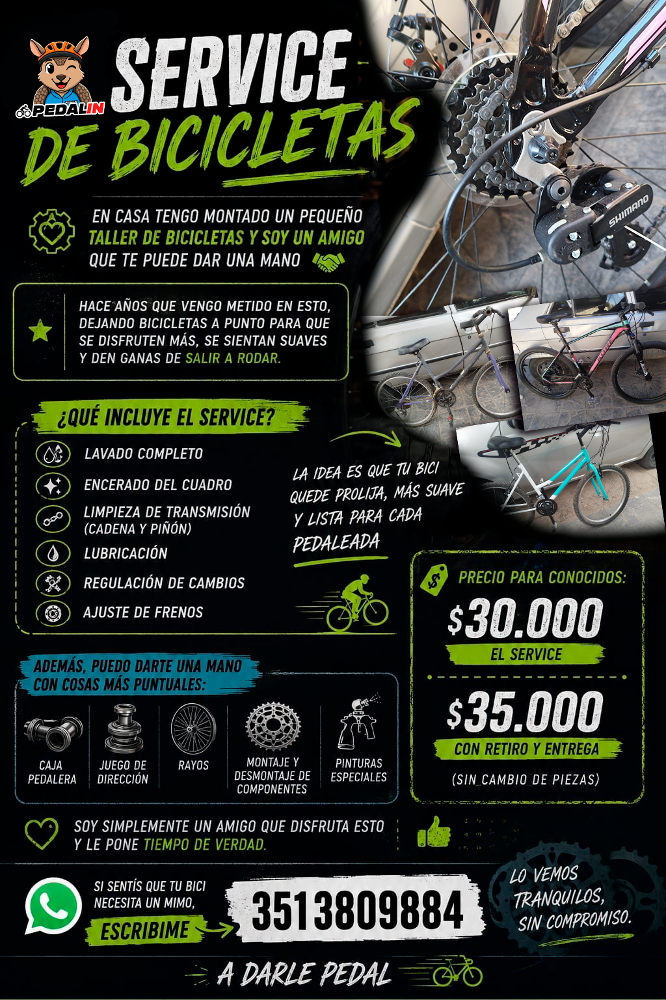

Encuentro en Córdoba Capital, abiertos a toda la familia,
sin restricciones de edad ni de tipo de bicicleta, en formato paseo.
Próximas bicicleteadas
Hacé clic sobre el flyer para inscribirte en nuestra próxima bicicleteada.

YouTube
Las últimas publicaciones de Instagram de PEDALIN.
Cargando publicaciones de Instagram...
¿Qué es PEDALIN?
Mucho más que un grupo de ciclistas, somos una comunidad que crece con cada pedaleada.
PEDALIN nació en Córdoba, Argentina, a partir de una idea sencilla: reunir personas que compartieran las ganas de andar en bicicleta, conocer nuevos lugares y disfrutar de buenos momentos juntos.
Lo que comenzó como un proyecto entre amigos fue creciendo hasta convertirse en una comunidad abierta, donde la amistad, el compañerismo, la solidaridad y el respeto son tan importantes como los kilómetros recorridos.
Creemos que no hace falta tener la bicicleta más cara, ser un deportista experimentado ni pedalear más rápido que los demás para formar parte. Lo importante es tener ganas de participar, compartir y disfrutar.
Nuestra manera de pedalear
Organizamos distintas actividades para que cada persona pueda encontrar su lugar:
- Bicicleteada de la Amistad: paseos recreativos, familiares y accesibles, ideales para compartir una jornada sobre ruedas.
- Remix LED: salidas al atardecer y por la noche, donde las luces, la creatividad y la diversión transforman las calles en una experiencia diferente.
- La Pro: recorridos de mayor distancia y exigencia, pensados para quienes desean superar nuevos desafíos.
- Encuentros y actividades especiales: jornadas de integración, ciclomecánica, aprendizaje y experiencias que van mucho más allá de pedalear.
Una comunidad que construimos entre todos
Detrás de cada salida hay personas que dedican tiempo a organizar recorridos, coordinar la seguridad, acompañar a los participantes y brindar asistencia cuando alguien la necesita.
Pero PEDALIN también vive fuera de las bicicleteadas: en las conversaciones, las fotografías compartidas, las amistades que nacen, los conocimientos que circulan y los pequeños gestos de solidaridad.
Con el tiempo fuimos sumando nuevos proyectos, como nuestra revista A Darle Pedal, actividades de ciclomecánica, iniciativas comunitarias y espacios para seguir conectados.
Todo esto forma parte de una misma idea: que nadie sea simplemente un participante más, sino que todos puedan sentirse parte de algo que construimos juntos.
Nuestro compromiso
Promovemos el ciclismo recreativo, la convivencia responsable, el cuidado mutuo y el respeto por los demás usuarios de la vía pública.
Queremos que cada encuentro sea una oportunidad para disfrutar, aprender, hacer amigos y descubrir que una bicicleta puede llevarnos mucho más lejos que a un destino.
Porque en PEDALIN no se trata solamente de llegar. Se trata de disfrutar el camino y de las personas con quienes lo compartimos.
«Este grupo lo hacemos entre todos, y cada salida, cada foto y cada pedaleada suma para que la comunidad siga creciendo».
PEDALIN — Bicicleteada de la Amistad.
¡A darle pedal!
Sumate a Pedalin
🚴♂️💚 ¡Nuestro grupo de WhatsApp es un espacio para compartir y organizar nuestras bicicleteadas!
Durante la semana lo mantenemos cerrado para evitar el exceso de mensajes y notificaciones, respetando los tiempos y la tranquilidad de todos. Los fines de semana lo abrimos para charlar, coordinar las salidas y disfrutar de nuestra amistad sobre ruedas.
¡Completá el formulario y venite a pedalear con nosotros! 💚
Taller y Services

El Taller de PEDALIN no es solo un taller de bicicletas, es una mano amiga en quien confiar para que todo funcione como corresponde.
Hace años que este tallercito respira ciclismo, dejando bicicletas a punto para que se disfruten más, se sientan más suaves y den ganas de salir a rodar.
Cada service se destaca por la dedicación, el cuidado y el amor por las bicicletas:
🔧 Lavado completo
✨ Encerado del cuadro
⚙️ Limpieza de transmisión (cadena y piñón)
🛢️ Lubricación
🚲 Regulación de cambios
🛑 Ajuste de frenos
También ofrece soluciones mecánicas puntuales, según lo que necesite cada bicicleta:
🔩 Caja pedalera
🔧 Juego de dirección
🛞 Rayos
⚙️ Montaje y desmontaje de componentes
La idea es que tu bici quede prolija, más suave y lista para cada pedaleada.
Además, el taller cuenta con trabajos de:
🎨 Pinturas especiales y restauraciones completas.
El service general tiene un precio accesible:
👉 $30.000 el service
👉 $35.000 con retiro y entrega
Los precios no incluyen el reemplazo de piezas.
Detrás de cada trabajo hay tiempo, dedicación y un amigo que disfruta lo que hace.
Si sentís que tu bici necesita un mimo, ¡mandá un mensaje! 👍
Lo vemos tranquilos, sin compromiso.
¡A darle pedal! 🚴♂️💨